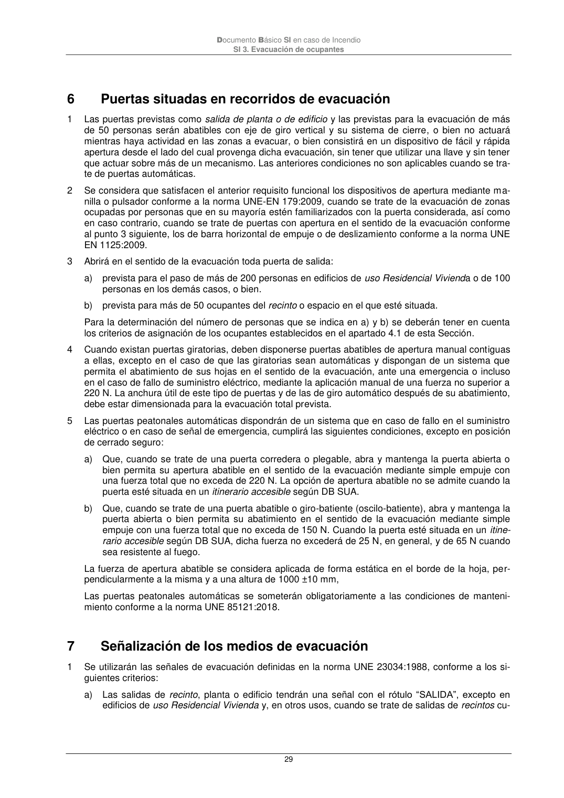

DB-SI Seguridad en caso de incendio · edición 2025-03-04 · capa oficial
Documento DB-SI-oficial · SHA-256 del PDF 0a2e78cd62471d9cc5cfe2efbc6aa39fdbad73c124aea7b039f9de96c141e105
Copia fiel del PDF fuente · Fuente oficial
Ficha de la disposición en la fuente oficial
Formatos: JSON del segmento · Markdown
Señalización de los medios de evacuación 1 Se utilizarán las señales de evacuación definidas en la norma UNE 23034:1988, conforme a los si- guientes criterios: a) Las salidas de recinto, planta o edificio tendrán una señal con el rótulo “SALIDA”, excepto en edificios de uso Residencial Vivienda y, en otros usos, cuando se trate de salidas de recintos cu- Documento Básico SI en caso de Incendio SI 3. Evacuación de ocupantes 30 ya superficie no exceda de 50 m², sean fácilmente visibles desde todo punto de dichos recintos y los ocupantes estén familiarizados con el edificio. b) La señal con el rótulo “Salida de emergencia” debe utilizarse en toda salida prevista para uso exclusivo en caso de emergencia. c) Deben disponerse señales indicativas de dirección de los recorridos, visibles desde todo origen de evacuación desde el que no se perciban directamente las salidas o sus señales indicativas y, en particular, frente a toda salida de un recinto con ocupación mayor que 100 personas que ac- ceda lateralmente a un pasillo. d) En los puntos de los recorridos de evacuación en los que existan alternativas que puedan inducir a error, también se dispondrán las señales antes citadas, de forma que quede claramente indi- cada la alternativa correcta. Tal es el caso de determinados cruces o bifurcaciones de pasillos, así como de aquellas escaleras que, en la planta de salida del edificio, continúen su trazado ha- cia plantas más bajas, etc. e) En dichos recorridos, junto a las puertas que no sean salida y que puedan inducir a error en la evacuación debe disponerse la señal con el rótulo “Sin salida” en lugar fácilmente visible pero en ningún caso sobre las hojas de las puertas. f) Las señales se dispondrán de forma coherente con la asignación de ocupantes que se pretenda hacer a cada salida, conforme a lo establecido en el capítulo 4 de esta Sección. g) Los itinerarios accesibles (ver definición en el Anejo A del DB SUA) para personas con discapa- cidad que conduzcan a una zona de refugio, a un sector de incendio alternativo previsto para la evacuación de personas con discapacidad, o a una salida del edificioaccesible se señalizarán mediante las señales establecidas en los párrafos anteriores a), b), c) y d) acompañadas del SIA (Símbolo Internacional de Accesibilidad para la movilidad). Cuando dichos itinerarios accesibles conduzcan a una zona de refugio oa un sector de incendio alternativo previsto para la evacua- ción de personas con discapacidad, irán además acompañadas del rótulo “ZONA DE REFU- GIO”. h) La superficie de las zonas de refugio se señalizará mediante diferente color en el pavimento y el rótulo “ZONA DE REFUGIO” acompañado del SIA colocado en una pared adyacente a la zona. 2 Las señales deben ser visibles incluso en caso de fallo en el suministro al alumbrado normal. Cuan- do sean fotoluminiscentes deben cumplir lo establecido en las normas UNE 23035-1:2003, UNE 23035-2:2003 y UNE 23035-4:2003 y su mantenimiento se realizará conforme a lo establecido en la norma UNE 23035-3:2003. 8
